Metalwork
In the assortment of our Iron-Art art studio, you will find artistic products made of metal, kept in the Art Nouveau climate and decorated with the greatest precision and sensitivity.
We offer metalwork for church furnishings: church piggy banks, church candlesticks, church cross reconstruction services, restoration of mass chalices, as well as metalwork-elements for home furnishings, including picture frames, mirror frames, decorative elements of artistic metalwork.
We encourage you to familiarize yourself with our products and to read the price list of products posted on our website.
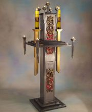
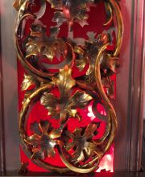
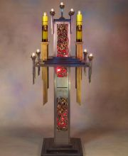
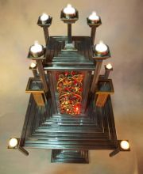
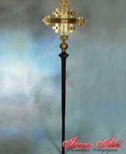
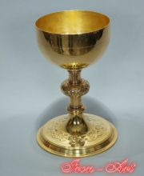
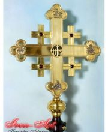
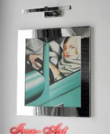
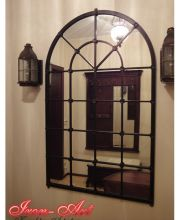
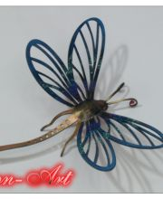
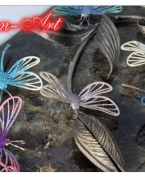
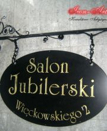